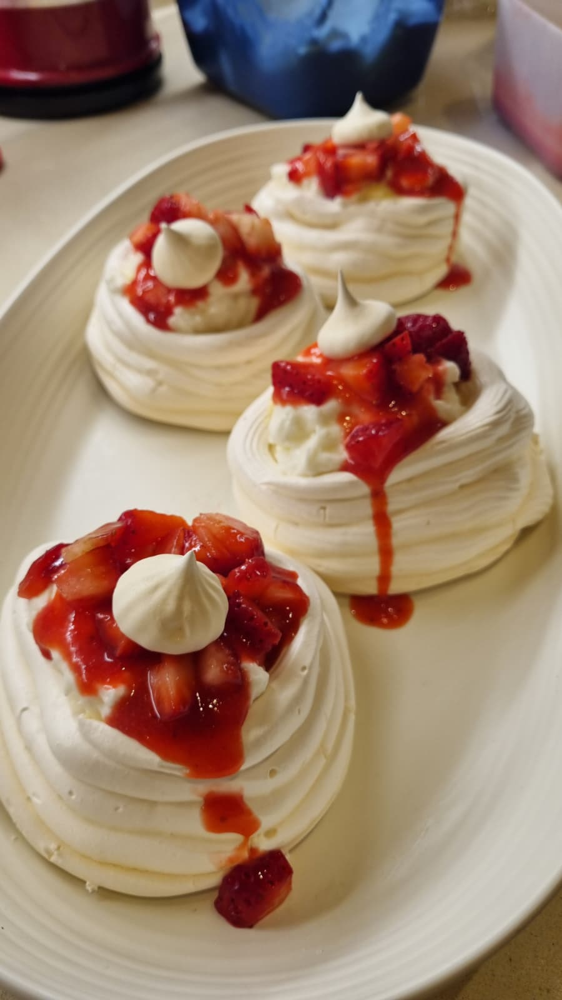

Hi, I'm Keren.
An Industrial Engineering Student

I'm a 3rd-year Industrial Engineering & Management student at Ben-Gurion University, Beer Sheva. I love working with data - designing databases, building dashboards, and turning numbers into clear insights. Native English and Hebrew speaker, quick to learn, and always bringing curiosity and creativity to everything I do.

I work with SQL, Power BI, and Excel to design databases, write complex queries, and build dashboards that make data easy to understand. I also code in Python and Java, and love using GenAI tools to boost my productivity and workflow efficiency.

The kitchen is my creative studio. Whether it's sourdough bread, a layered cake, or experimenting with a brand new recipe - baking is how I unwind and bring joy to the people around me.
Music has always been a big part of my life. I love to sing - it's my favourite way to express myself and recharge after a long day of studying.
Exploring new places, cultures, and cuisines is something I'm truly passionate about. Every trip teaches me something new and fuels my curiosity about the world.
Love data, baking, or a good conversation?
Let's connect!